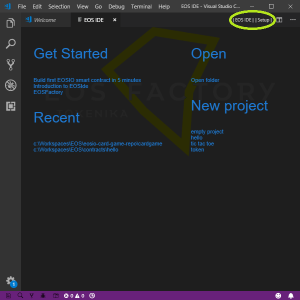
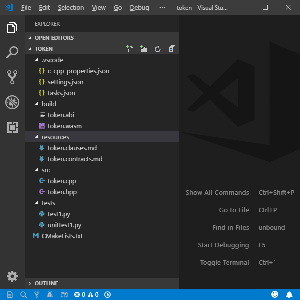
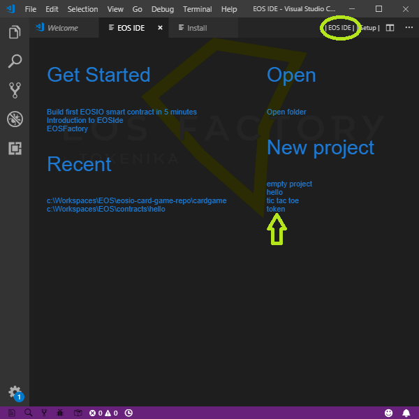
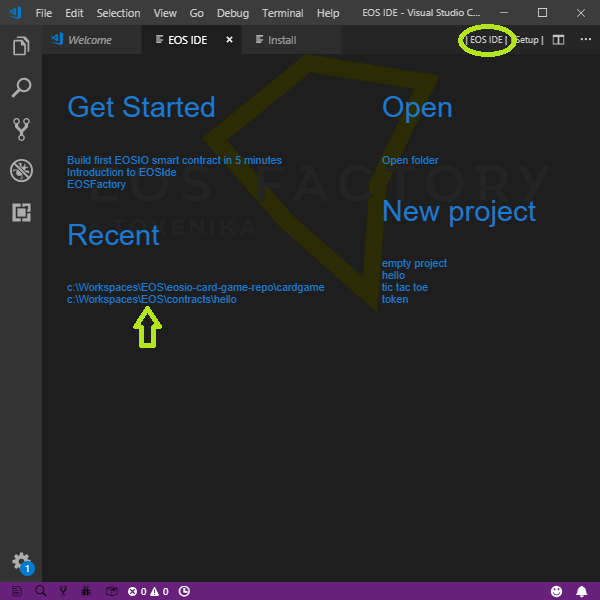
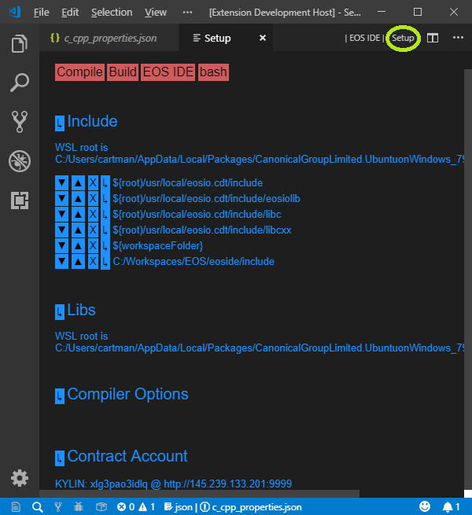
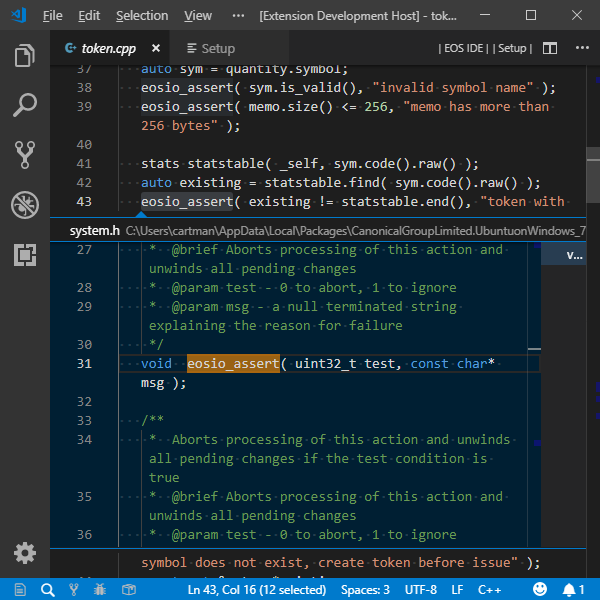
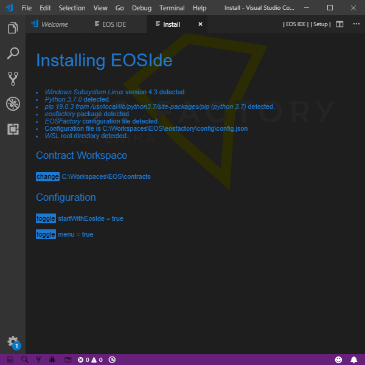

EOSIde – Integrated Development Environment for EOSIO smart contracts¶
EOSIde organizes the workflow of development process for EOSIO smart contracts – if such a process can be seen as composed of the following elements:
- project standardization,
- easy access to an project archive,
- referencing documentation and tutorials,
- automatic availability of standard libraries,
- dependency management,
- intellisense,
- compilation and building,
- testing,
- deployment.
EOSIde is an extension to the Visual Studio Code.
Get Started view¶
If the EOSIde extension is installed – with the default configuration – on the VSCode, and if VSCode is started empty with the command code -n "", it opens the Get Started, view as shown in the picture below:
Get Started view
Let us list the functions of this view,
- Get Started entries link to tutorials and other documentation.
- New project entries trigger creation of a project based on a template.
- Recent entries switch to projects started with the New project triggers.
- Open entries trigger specific actions.
- Two menu buttons in the editor title bar, namely
|EOS IDE|and|Setup|display corresponding views.
Project standardization¶
Any EOSIO smart contract resides in its folder. EOSIde supports a specific layout of the contract folder:
- root – project folder,
- .vscode – system folder
- build – folder where contract WASM and ABI files go,
- resources – folder containing Ricardian contract files and whatever else,
- src – folder with CPP/C source files
- tests - folder with Python scripts, especially EOSFactory scripts
- *CMakeLists.txt - the CMake lists file of the project
In the picture below, it is shown an exemplary project layout.
Project layout
EOSIde can produce a new project. A project may be empty, or it can be based on a template. The following figure show the selection process. First, the EOS IDE screen has to be active. Next, click the chosen template.
New project
A native folder chooser opens. Create a folder named as the new project. Select the new folder, click the Open button. The project folder is in the EXPLORER panel, now. The path to the project is in the Recent list, which is active one: you can open any of the listed projects just clicking its entry.
Recent list
Dependency management¶
Dependency management is implemented with the view shown in the following picture.
Setup view
Include lists directories containg headers needed by the project. This list is linked to the file .vscode/c_cpp_properties.json. The entries are provided with buttons that manipulate them, especially, new items may be added with the system-native file dialog. With Windows, all file paths are expressed relative to the WSL root (Windows Subsystem Linux).
Libs lists libraries resolving outer dependencies of the project.
Compiler Options lists parameters of the wasm compiler.
Contract Account defines the contract that holds the contract. Its name has to be chosen from a list given with the bash command:
python3 -m eosfactory.testnets
The buttons in the top, labelled Compile, Build, EOS IDE and bash, trigger corresponding actions. Especially, the bash button – present if Windows – starts a new bash terminal.
All the dependencies are stored in the file .vscode/c_cpp_properties.json. This file feeds both compile/build procedures and the intellisense features of VSCode.
Intellisense¶
It is a property of VSCode that it implements intellisense functions, if proper data is provided. EOSIde ensures that data automatically. The following picture shows the result of Pick Definition command applied to the function eosio_assert.
Intellisense
Compile and build¶
Compiling does not produce contract files, its purpose is to check whether the source code of the contract is compilable, and if not, to see the error log.
Building results in ABI and WASM files.
Compilation depends on project dependencies like included headers and linked libraries. The dependencies registered to the project, as it is explained, are automatically involved into the presented compilation methods.
VSCode style: compile and build with VSCode tasks and commands¶
Compile:
- vscode task: Terminal => Run Task… => Compile
- vscode command: ctrl+shift+p => eosid compile
- keybord shortcut: ctrl+shift+c
Build:
- vscode task: Terminal => Run Build Task…
- vscode command: ctrl+shift+p => eosid build
- keybord shortcut: ctrl+shift+b
In the picture below, it is shown the task selection dialog:
 Build task
Build task
Build using CMake¶
If your computer system is Windows, the default terminal of the VSCode is Powershell, while the CMake operations have to be executed with Ubuntu bash, therefore use ctrl+shift+t shortcut to a vscode command that opens a new Ubuntu bash terminal. Or issue the command bash in the Powershell terminal.
In the Ubuntu bash terminal, do…
cd build
cmake ..
make
…you can expect a response like the following:
cartman@cartman-PC:/mnt/c/Workspaces/EOS/contracts/token$ cd buildcartman@cartman-PC:/mnt/c/Workspaces/EOS/contracts/token/build$ cmake ..
-- Configuring done
-- Generating done
-- Build files have been written to: /mnt/c/Workspaces/EOS/contracts/token/build
cartman@cartman-PC:/mnt/c/Workspaces/EOS/contracts/token/build$ make
Scanning dependencies of target abi
ABI file writen to file:
/mnt/c/Workspaces/EOS/contracts/token/build/token.abi
Built target abi
Scanning dependencies of target wast
WASM file writen to file:
/mnt/c/Workspaces/EOS/contracts/token/build/token.wasm
Built target wast
cartman@cartman-PC:/mnt/c/Workspaces/EOS/contracts/token/build$
Build with EOSFactory¶
If your computer system is Windows, see note.
You can build a contract programmatically in a Python module. Here we present the idea of an interactive session. Start the session then use EOSFactory:
python3
from eosfactory.eosf import ContractBuilder
ContractBuilder().build()
Here is an exemplary listing of the bash action:
Python 3.5.2 (default, Nov 23 2017, 16:37:01)
[GCC 5.4.0 20160609] on linux
Type "help", "copyright", "credits" or "license" for more information.
>>> from eosfactory.eosf import ContractBuilder
>>> ContractBuilder().build()
ABI file writen to file:
/mnt/c/Workspaces/EOS/contracts/token/build/token.abi
WASM file writen to file:
/mnt/c/Workspaces/EOS/contracts/token/build/token.wasm
Deploy contract¶
Deployment means attaching a contract to an account. A default account be defined with the Setup view, see Contract Account button there.
The following three subsections show how to deploy the contract of the current project to the default account.
Deploy with VSCode command¶
- vscode command: ctrl+shift+p => eosid deploy
- keybord shortcut: ctrl+shift+y
Deploy with Ubuntu bash¶
python3 -m eosfactory.deploy
Deploy with EOSFactory¶
import eosfactory.core.logger as logger
from eosfactory.shell.contract import Contract
from eosfactory.core.teos import get_c_cpp_properties
c_cpp_properties = teos.get_c_cpp_properties()
if not c_cpp_properties:
logger.ERROR('''
The testnet account is not set and it can not be found any
c_cpp_properties json file.
''')
if not "contractAccount" in c_cpp_properties:
logger.ERROR('''
The testnet account is not set, and it can not be found in a
c_cpp_properties json file.
''')
testnet_account = eosfactory.core.testnet.get_testnet(testnet_account_name)
if not testnet_account:
logger.ERROR('''
There is not any testnet account named '{}' in the list.
Use the bash command
`python3 -m eosfactory.utils.register_testnet -h`
to get instructions how to register a testnet account.
'''.format(testnet_account_name))
testnet_account.configure()
testnet_account.verify_production()
contract_account = account.restore_account(
testnet_account_name, testnet_account)
Contract(contract_account).deploy()
Testing¶
Tests are Python scripts located in the directory tests. Any script can be executed in a bash terminal, for example:
python3 tests/test1.py
VSCode style: testing with VSCode tasks¶
Testing with CMake¶
In order to use CMake testing feature, test scripts have to be registered in the CMakeLists file, for example, two scripts named test1 and unittest1:
add_test( NAME tests COMMAND python3 ${CMAKE_SOURCE_DIR}/tests/test1.py )
add_test( NAME unittest COMMAND python3 ${CMAKE_SOURCE_DIR}/tests/unittest1.py )
However, it is possible to select a single test, typically all the tests are automatically executed one-by-one, as an overall test.
Tests are invoked in a bash terminal:
cd build
ctest
An exemplary listing of the ctest bash action:
Test project /mnt/c/Workspaces/EOS/contracts/token/build
Start 1: tests
1/2 Test #1: tests ............................ Passed 15.98 sec Start 2: unittest
2/2 Test #2: unittest ......................... Passed 16.08 sec
100% tests passed, 0 tests failed out of 2
Total Test time (real) = 32.07 sec
from eosfactory.eosf import *
from eosfactory.shell.account import restore_account
import eosfactory.core.testnet as testnet
testnet = Testnet(
None,
"dgxo1uyhoytn",
"5JE9XSurh4Bmdw8Ynz72Eh6ZCKrxf63SmQWKrYJSXf1dEnoiKFY",
"5JgLo7jZhmY4huDNXwExmaWQJqyS1hGZrnSjECcpWwGU25Ym8tA",
"contract_account"
)
testnet.configure()
testnet.verify_production()
restore_account("contract_account", testnet)
testnet = testnet.KYLIN
testnet.configure()
testnet.verify_production()
restore_account("contract_account", testnet)
Contract(host).deploy()
Install view¶
With the VSCode command ctrl+shift+p => eoside install, you can display the status of the installation. The following picture shows the view.
Setup view
With the view, you may change settings.
Contract Workspace¶
If you create a new project from a template, the system-native directory choosing dialog opens in the named directory. You can change it, starting with clicking the change button.
Configuration¶
Start with eoside¶
If launched with the EOSIde extension installed, an instance of VSCode starts with the Get Started view (if the Explorer panel is empty). If you consider this behavior annoying, click the button toggle.
You can call the view either with |EOS IDE|** menu item in the VSCode editor title bar, or ctrl+shift+p => eoside |EOS IDE|